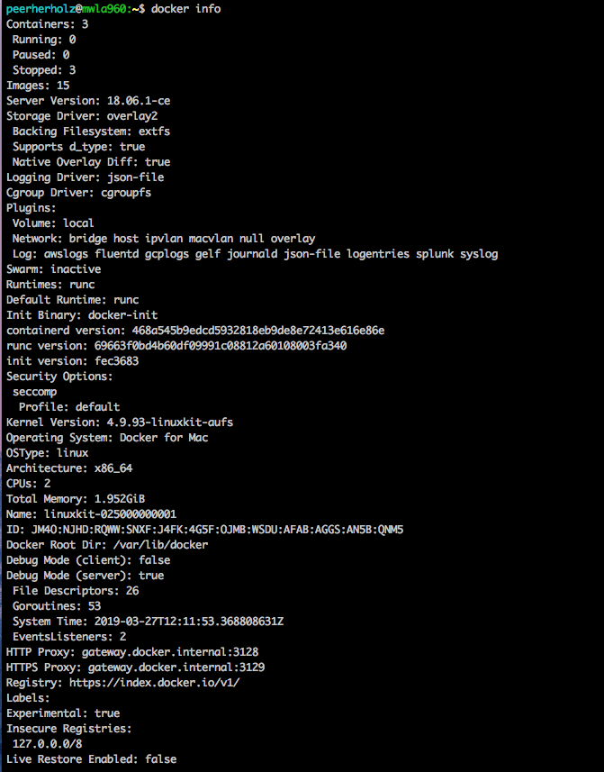
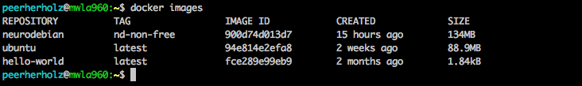
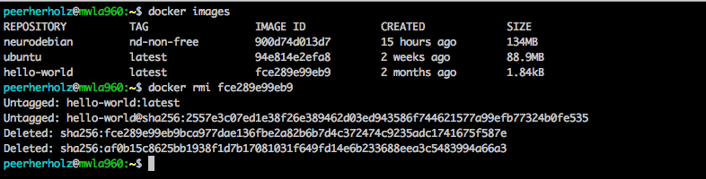
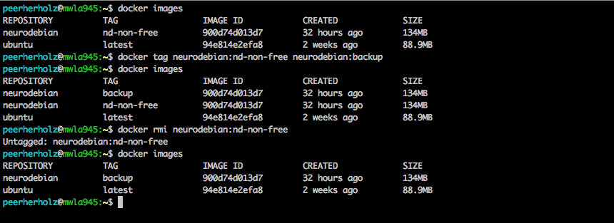
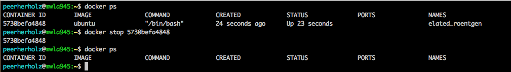
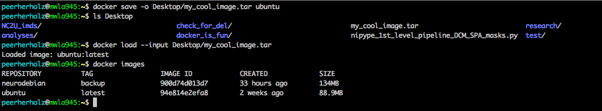

name: inverse layout: true class: center, middle, inverse --- # Docker management ## - organization, settings, resources ### ~15min --- layout: false ##<span style="color:purple">Outline</span> - ### Learning objectives - ### Introduction - ### Exercises --- ## <span style="color:purple">Learning objectives</span> - ### basic docker management - ### docker commands - ### resource management -- ## <span style="color:purple">Requirements</span> - ### Your computer: `Docker` - ### You: `shell` / `Terminal` --- name: inverse layout: true class: center, middle, inverse --- # Introduction --- layout: false ### <span style="color:purple">How's docker configured?</span> - ### the setup and configuration of a given *docker* installation is rather complex and characterized by a myriad of factors and settings: storage, RAM, swap, CPU, proxy, etc. ... -- - ### even though not prune to errors, problems can arise easily -- - ### you should be aware of how the *docker* installation you're using is setup and configured at any given time, as otherwise perfectly working *docker containers* fail to function properly -- - ### as usual, consider the *readme* and/or *docs* of a given *docker container* before using it --- ### <span style="color:purple">How's docker configured?</span> - to get a comprehensive overview of our *docker setup and configuration* we can use the respective *docker command*: ```bash docker info ```  --- ### <span style="color:purple">Docker configuration</span> - as we can see, *docker* uses a default amount of *RAM*, *CPUs*, etc. -- - all of these parameters can be set and configured within the `docker run` command and the respective *flags* -- - set *RAM* using `--memory RAM in mb or gb`, e.g. `--memory 4gb` ```bash docker run -it --rm --memory 4gb ubuntu ``` -- - set *swap* using `--memory-swap in mb ir gb`, e.g. `--memory-swap 5gb` ```bash docker run -it --rm --memory 4gb --memory-swap 5gb ubuntu ``` -- - set *CPUs* using `--cpus CPUs as int`, e.g. `--cpus 2` ```bash docker run -it --rm --memory 4gb --memory-swap 5gb --cpus 2 ubuntu ``` --- ### <span style="color:purple">Docker configuration</span> - it's also possible to change the default configuration using neither the GUI (in mac osx) <img src="images/docker_pref.png" width="60%" /> --- ### <span style="color:purple">Docker configuration</span> - or the *command line* (in every OS) - completey reset and create new default ```bash docker-machine stop default docker-machine rm default docker-machine create -d virtualbox --virtualbox-memory=4096 \ --virtualbox-cpu-count=2 --virtualbox-disk-size=50000 default ``` -- - modify existing default ```bash docker-machine stop default VBoxManage modifyvm default --memory 4096 docker-machine start default ``` --- ###<span style="color:purple">Docker & resource management</span> - get a list of available *docker containers* using `docker images` ```bash docker images ```  -- - remove a given *docker container* using `docker rmi container-id` ```bash docker rmi container-id ```  --- ###<span style="color:purple">Docker & resource management</span> - as you've seen, the *docker container* is `untagged` before being deleted -- - we can use the *tag* related behavior to "rename" a given *docker container* in order to prevent unwanted deletions or problems wrt version control using the `tag` command ```bash docker tag old-container-name/container-id:tag new-container-name/container-id:tag ``` --- ###<span style="color:purple">Docker & resource management</span> - we can use the *tag* related behavior to "rename" a given *docker container* in order to prevent unwanted deletions or problems wrt version control using the `tag` command ```bash docker tag old-container-name/container-id:tag new-container-name/container-id:tag ```  --- ###<span style="color:purple">Docker & resource management</span> - the `docker ps` command lists all running *containers* ```bash docker ps ``` <img src="images/docker_ps_example.png" width="100%" /> - worth checking, if you notice a drop in performance during computation, can't connect to certain *ports* when using *jupyter notebooks*, get a memory related error, etc. - the `--rm` flag should prevent this in most cases, however chances are that *containers* keep running in the background - by now our evergreen: check the *readme* and/or *docs* of a given *docker container* --- ###<span style="color:purple">Docker & resource management</span> - *docker containers* can also be *stopped* manually using the `docker stop` command: ```bash docker stop image-id ```  --- ###<span style="color:purple">Docker & resource management</span> - besides using [Docker Hub](https://hub.docker.com/) to share and download *docker containers*, it's also possible to *export* and *import* them locally using the *docker commands* `save` & `load` ```bash docker save -o my_cool_image.tar ``` ```bash docker load --input my_cool_image.tar ```  --- ### <span style="color:purple">Docker commands 101 - excerices</span> - "rename" our *ubuntu container*, changing the tag from `latest` to `image_42` - export/save the newly created *container* as `a_container_at_the_end_of_the_universe.tar` to your `Desktop` - remove the existing *ubuntu containers* - import/load `a_container_at_the_end_of_the_universe.tar` - run the newly loaded *container* using 2GB of RAM, 3 GB of swap and 1 CPU --- ### <span style="color:purple">Docker commands 101 - excerices</span> - "rename" our *ubuntu container*, changing the tag from `latest` to `image_42` -- ```bash docker tag ubuntu:latest ubuntu:image_42 ``` -- - export/save the newly created *container* as `a_container_at_the_end_of_the_universe.tar` to your `Desktop` -- ```bash docker save -o Desktop/a_container_at_the_end_of_the_universe.tar ubuntu:image_42 ``` -- - remove the existing *ubuntu containers* -- ```bash docker rmi ubuntu:latest && docker rmi ubuntu:42 ``` -- - import/load `a_container_at_the_end_of_the_universe.tar` -- ```bash docker load --input Desktop/a_container_at_the_end_of_the_universe.tar ``` -- - run the newly loaded *container* using 2GB of RAM, 3 GB of swap and 1 CPU -- ```bash docker run -it --rm --memory 2gb --memory-swap 3gb --cpus 1 ubuntu:image_42 ``` --- ### <span style="color:purple">Docker commands 101 - excerices</span> - basic image management: ```bash # Set RAM, swap and CPUs for a given *docker container* docker run -it --rm --memory 2gb --memory-swap 3gb --cpus 1 container-name # Get list of currently available *docker containers* docker images # Get list of currently running *docker containers* docker ps # Stop a given running *docker container* docker stop image-id # Rename/change tag of a given *docker container* docker tag old-image-name/-id new-image-name/id # Export/save a given *docker container* docker save -o path/my_cool_image.tar image-name # Import/load a given *docker container* docker load --input path/my_cool_image.tar ``` --- name: inverse layout: true class: center, middle, inverse --- # Questions?